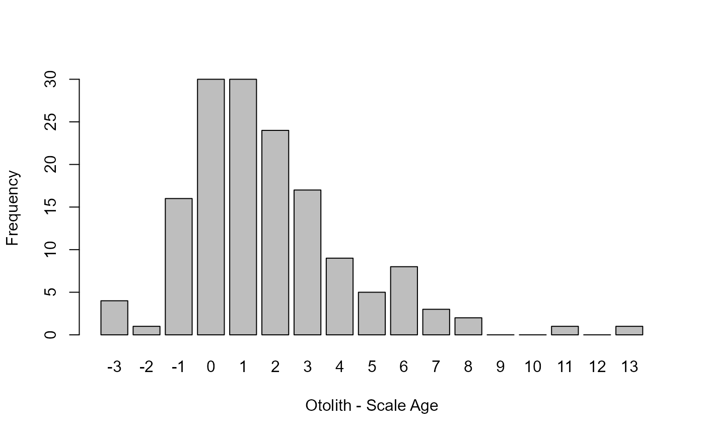
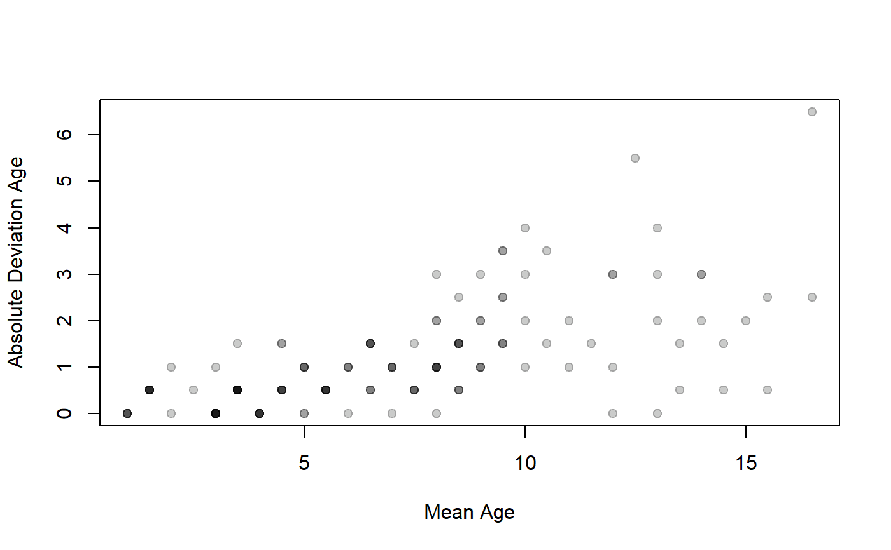
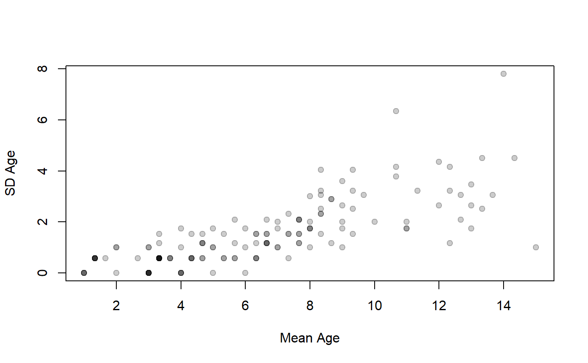

Computes overall measures of precision for multiple age estimates made on the same individuals. Ages may be from two or more readers of the same structure, one reader at two or more times, or two or more structures (e.g., scales, spines, otoliths). Measures of precision include ACV (Average Coefficient of Variation), APE (Average Percent Error), AAD (Average Absolute Deviation), and ASD (Average Standard Devation), and various percentage difference values.
agePrecision(formula, data) # S3 method for agePrec summary(object, what = c("precision", "difference", "absolute difference", "details"), percent = TRUE, trunc.diff = NULL, digits = 4, show.prec2 = FALSE, ...)
| formula | A formula of the form |
|---|---|
| data | A data.frame that minimally contains the variables in |
| object | An object of class |
| what | A string (or vector of strings) that indicates what type of summary to print. See details. |
| percent | A logical that indicates whether the difference table (see details) should be represented as percentages ( |
| trunc.diff | A single integer that identifies the age for which all values that age and greater are combined into one category. See the examples. |
| digits | A single numeric that indicates the minimum number of digits to print when using |
| show.prec2 | A logical that indicates whether the precision metrics that use the median (i.e., ACV2 and APE2) should be shown when only two age estimates were made (in this instance they will be exactly equal to ACV and APE). Default is to not show these values in this situation. |
| … | Additional arguments for methods. |
The main function returns a list with the following items:
detail A data.frame with all data given in data and intermediate calculations for each fish. See details
rawdiff A frequency table of fish by differences for each pair of ages.
absdiff A frequency table of fish by absolute differences for each pair of ages.
AAD The average absolute deviation.
APE The average percent error (using the mean age as the divisor).
APE2 The average percent error (using the median age as the divisor).
ASD The average standard deviation.
ACV The average coefficient of variation (using the mean age as the divisor).
ACV2 The average coefficient of variation (using the median age as the divisor).
AD The average index of precision.
R The number of readings for each individual fish.
n Number of fish in data.
validn Number of fish in data that have non-NA data for all R age estimates.
The summary returns the result if what= contains only one item, otherwise it returns nothing. See details for what is printed.
If what="precision" in summary then a summary table that contains the following items will be printed:
n Number of fish in data.
validn Number of fish in data that have non-NA data for all R age estimates.
R Number of age estimates given in formula.
PercAgree The percentage of fish for which all age estimates perfectly agree.
ASD The average (across all fish) standard deviation of ages within a fish.
ACV The average (across all fish) coefficient of variation of ages within a fish using the mean as the divisor. See the IFAR chapter for calculation details.
ACV2 The average (across all fish) coefficient of variation of ages within a fish using the median as the divisor. This will only be shown if R>2 or show.prec2=TRUE.
AAD The average (across all fish) absolute deviation of ages within a fish.
APE The average (across all fish) percent error of ages within a fish using the mean as the divisor. See the IFAR chapter for calculation details.
APE2 The average (across all fish) percent error of ages within a fish using the median as the divisor. This will only be shown if R>2 or show.prec2=TRUE.
AD The average (across all fish) index of precision (D).
Note that ACV2 and APE2 will not be printed when what="precision" if only two sets of ages are given (because mean=median such that ACV=ACV2 and APE=APE2).
If what="difference" is used in summary, then a table that describes either the percentage (if percent=TRUE, DEFAULT) or frequency of fish by the difference in paired age estimates. This table has one row for each possible pair of age estimates.
If what="absolute difference" is used in summary, then a table that describes either the percentage (if percent=TRUE, DEFAULT) or frequency of fish by the absolute value of the difference in paired age estimates. This table has one row for each possible pair of age estimates. The “1” column, for example, represents age estimates that disagree by one year (in either direction).
If what="detail" is used in summary, then a data.frame of the original data along with the intermediate calculations of the mean age, median age, modal age (will be NA if a mode does not exist (e.g., all different ages) or multiple modes exist), standard deviation of age (SD), coefficient of variation using the mean as the divisor (CV), coefficient of variation using the median as the divisor (CV2), absolute deviation using the mean as the divisor (AD), absolute deviation using the median as the divisor (AD2), average percent error (PE), and index of precision (D) for each individual will be printed.
All percentage calculations above use the validn value in the denominator.
Tested all precision results against published results in Herbst and Marsden (2011) for the WhitefishLC data and the results for the AlewifeLH data set from FSAdata against results from the online resource at http://www.nefsc.noaa.gov/fbp/age-prec/.
4-Age Comparisons.
Ogle, D.H. 2016. Introductory Fisheries Analyses with R. Chapman & Hall/CRC, Boca Raton, FL.
Beamish, R.J. and D.A. Fournier. 1981. A method for comparing the precision of a set of age determinations. Canadian Journal of Fisheries and Aquatic Sciences 38:982-983. [Was (is?) available from http://www.pac.dfo-mpo.gc.ca/science/people-gens/beamish/PDF_files/compareagecjfas1981.pdf.]
Campana, S.E. 1982. Accuracy, precision and quality control in age determination, including a review of the use and abuse of age validation methods. Journal of Fish Biology 59:197-242. [Was (is?) available from http://www.denix.osd.mil/nr/crid/Coral_Reef_Iniative_Database/References_for_Reef_Assessment_files/Campana,%202001.pdf.]
Campana, S.E., M.C. Annand, and J.I. McMillan. 1995. Graphical and statistical methods for determining the consistency of age determinations. Transactions of the American Fisheries Society 124:131-138. [Was (is?) available from http://www.bio.gc.ca/otoliths/documents/Campana%20et%20al%201995%20TAFS.pdf.]
Chang, W.Y.B. 1982. A statistical method for evaluating the reproducibility of age determination. Canadian Journal of Fisheries and Aquatic Sciences 39:1208-1210. [Was (is?) available from http://www.nrcresearchpress.com/doi/abs/10.1139/f82-158.]
McBride, R.S. 2015. Diagnosis of paired age agreement: A simulation approach of accuracy and precision effects. ICES Journal of Marine Science, 72:2149-2167.
See ageBias for computation of the full age agreement table, along with tests and plots of age bias.
## Example with just two age estimates ap1 <- agePrecision(~otolithC+scaleC,data=WhitefishLC) summary(ap1)#> Precision summary statistics #> n validn R PercAgree ASD ACV AAD APE #> 151 151 2 19.87 1.541 21.11 1.089 14.93 #> #> Percentage of fish by absolute differences in ages #> between pairs of estimates #> 0 1 2 3 4 5 6 7 8 9 #> 19.8675 30.4636 16.5563 13.9073 5.9603 3.3113 5.2980 1.9868 1.3245 0.0000 #> 10 11 12 13 #> 0.0000 0.6623 0.0000 0.6623 #> #> Percentage of fish by differences in ages #> between pairs of estimates #> -3 -2 -1 0 1 2 3 4 5 6 #> 2.6490 0.6623 10.5960 19.8675 19.8675 15.8940 11.2583 5.9603 3.3113 5.2980 #> 7 8 9 10 11 12 13 #> 1.9868 1.3245 0.0000 0.0000 0.6623 0.0000 0.6623 #> #> Intermediate calculations for each individual #> otolithC scaleC mean median mode SD CV CV2 AD PE PE2 #> 1 3 3 3.0 3.0 3 0.0000 0.000 0.000 0.0 0.000 0.000 #> 2 3 4 3.5 3.5 NA 0.7071 20.203 20.203 0.5 14.286 14.286 #> 3 3 6 4.5 4.5 NA 2.1213 47.140 47.140 1.5 33.333 33.333 #> 4 3 4 3.5 3.5 NA 0.7071 20.203 20.203 0.5 14.286 14.286 #> 5 3 3 3.0 3.0 3 0.0000 0.000 0.000 0.0 0.000 0.000 #> 6 6 4 5.0 5.0 NA 1.4142 28.284 28.284 1.0 20.000 20.000 #> 7 10 7 8.5 8.5 NA 2.1213 24.957 24.957 1.5 17.647 17.647 #> 8 11 5 8.0 8.0 NA 4.2426 53.033 53.033 3.0 37.500 37.500 #> 9 4 3 3.5 3.5 NA 0.7071 20.203 20.203 0.5 14.286 14.286 #> 10 1 1 1.0 1.0 1 0.0000 0.000 0.000 0.0 0.000 0.000 #> 11 1 2 1.5 1.5 NA 0.7071 47.140 47.140 0.5 33.333 33.333 #> 12 3 4 3.5 3.5 NA 0.7071 20.203 20.203 0.5 14.286 14.286 #> 13 3 3 3.0 3.0 3 0.0000 0.000 0.000 0.0 0.000 0.000 #> 14 11 6 8.5 8.5 NA 3.5355 41.595 41.595 2.5 29.412 29.412 #> 15 10 6 8.0 8.0 NA 2.8284 35.355 35.355 2.0 25.000 25.000 #> 16 10 6 8.0 8.0 NA 2.8284 35.355 35.355 2.0 25.000 25.000 #> 17 14 6 10.0 10.0 NA 5.6569 56.569 56.569 4.0 40.000 40.000 #> 18 13 6 9.5 9.5 NA 4.9497 52.103 52.103 3.5 36.842 36.842 #> 19 13 7 10.0 10.0 NA 4.2426 42.426 42.426 3.0 30.000 30.000 #> 20 7 6 6.5 6.5 NA 0.7071 10.879 10.879 0.5 7.692 7.692 #> 21 14 7 10.5 10.5 NA 4.9497 47.140 47.140 3.5 33.333 33.333 #> 22 9 7 8.0 8.0 NA 1.4142 17.678 17.678 1.0 12.500 12.500 #> 23 7 5 6.0 6.0 NA 1.4142 23.570 23.570 1.0 16.667 16.667 #> 24 6 5 5.5 5.5 NA 0.7071 12.856 12.856 0.5 9.091 9.091 #> 25 6 3 4.5 4.5 NA 2.1213 47.140 47.140 1.5 33.333 33.333 #> 26 3 4 3.5 3.5 NA 0.7071 20.203 20.203 0.5 14.286 14.286 #> 27 3 4 3.5 3.5 NA 0.7071 20.203 20.203 0.5 14.286 14.286 #> 28 6 5 5.5 5.5 NA 0.7071 12.856 12.856 0.5 9.091 9.091 #> 29 4 6 5.0 5.0 NA 1.4142 28.284 28.284 1.0 20.000 20.000 #> 30 3 3 3.0 3.0 3 0.0000 0.000 0.000 0.0 0.000 0.000 #> 31 4 4 4.0 4.0 4 0.0000 0.000 0.000 0.0 0.000 0.000 #> 32 1 1 1.0 1.0 1 0.0000 0.000 0.000 0.0 0.000 0.000 #> 33 3 3 3.0 3.0 3 0.0000 0.000 0.000 0.0 0.000 0.000 #> 34 4 4 4.0 4.0 4 0.0000 0.000 0.000 0.0 0.000 0.000 #> 35 4 2 3.0 3.0 NA 1.4142 47.140 47.140 1.0 33.333 33.333 #> 36 4 3 3.5 3.5 NA 0.7071 20.203 20.203 0.5 14.286 14.286 #> 37 3 3 3.0 3.0 3 0.0000 0.000 0.000 0.0 0.000 0.000 #> 38 1 2 1.5 1.5 NA 0.7071 47.140 47.140 0.5 33.333 33.333 #> 39 1 1 1.0 1.0 1 0.0000 0.000 0.000 0.0 0.000 0.000 #> 40 2 1 1.5 1.5 NA 0.7071 47.140 47.140 0.5 33.333 33.333 #> 41 2 1 1.5 1.5 NA 0.7071 47.140 47.140 0.5 33.333 33.333 #> 42 4 3 3.5 3.5 NA 0.7071 20.203 20.203 0.5 14.286 14.286 #> 43 8 5 6.5 6.5 NA 2.1213 32.636 32.636 1.5 23.077 23.077 #> 44 2 5 3.5 3.5 NA 2.1213 60.609 60.609 1.5 42.857 42.857 #> 45 2 3 2.5 2.5 NA 0.7071 28.284 28.284 0.5 20.000 20.000 #> 46 3 3 3.0 3.0 3 0.0000 0.000 0.000 0.0 0.000 0.000 #> 47 1 2 1.5 1.5 NA 0.7071 47.140 47.140 0.5 33.333 33.333 #> 48 3 3 3.0 3.0 3 0.0000 0.000 0.000 0.0 0.000 0.000 #> 49 8 5 6.5 6.5 NA 2.1213 32.636 32.636 1.5 23.077 23.077 #> 50 4 3 3.5 3.5 NA 0.7071 20.203 20.203 0.5 14.286 14.286 #> 51 2 2 2.0 2.0 2 0.0000 0.000 0.000 0.0 0.000 0.000 #> 52 3 3 3.0 3.0 3 0.0000 0.000 0.000 0.0 0.000 0.000 #> 53 3 3 3.0 3.0 3 0.0000 0.000 0.000 0.0 0.000 0.000 #> 54 8 5 6.5 6.5 NA 2.1213 32.636 32.636 1.5 23.077 23.077 #> 55 4 4 4.0 4.0 4 0.0000 0.000 0.000 0.0 0.000 0.000 #> 56 6 5 5.5 5.5 NA 0.7071 12.856 12.856 0.5 9.091 9.091 #> 57 7 5 6.0 6.0 NA 1.4142 23.570 23.570 1.0 16.667 16.667 #> 58 2 1 1.5 1.5 NA 0.7071 47.140 47.140 0.5 33.333 33.333 #> 59 1 1 1.0 1.0 1 0.0000 0.000 0.000 0.0 0.000 0.000 #> 60 2 1 1.5 1.5 NA 0.7071 47.140 47.140 0.5 33.333 33.333 #> 61 1 2 1.5 1.5 NA 0.7071 47.140 47.140 0.5 33.333 33.333 #> 62 5 4 4.5 4.5 NA 0.7071 15.713 15.713 0.5 11.111 11.111 #> 63 5 4 4.5 4.5 NA 0.7071 15.713 15.713 0.5 11.111 11.111 #> 64 4 5 4.5 4.5 NA 0.7071 15.713 15.713 0.5 11.111 11.111 #> 65 5 6 5.5 5.5 NA 0.7071 12.856 12.856 0.5 9.091 9.091 #> 66 18 7 12.5 12.5 NA 7.7782 62.225 62.225 5.5 44.000 44.000 #> 67 7 8 7.5 7.5 NA 0.7071 9.428 9.428 0.5 6.667 6.667 #> 68 9 8 8.5 8.5 NA 0.7071 8.319 8.319 0.5 5.882 5.882 #> 69 5 4 4.5 4.5 NA 0.7071 15.713 15.713 0.5 11.111 11.111 #> 70 10 8 9.0 9.0 NA 1.4142 15.713 15.713 1.0 11.111 11.111 #> 71 12 7 9.5 9.5 NA 3.5355 37.216 37.216 2.5 26.316 26.316 #> 72 7 5 6.0 6.0 NA 1.4142 23.570 23.570 1.0 16.667 16.667 #> 73 10 8 9.0 9.0 NA 1.4142 15.713 15.713 1.0 11.111 11.111 #> 74 9 6 7.5 7.5 NA 2.1213 28.284 28.284 1.5 20.000 20.000 #> 75 11 7 9.0 9.0 NA 2.8284 31.427 31.427 2.0 22.222 22.222 #> 76 1 1 1.0 1.0 1 0.0000 0.000 0.000 0.0 0.000 0.000 #> 77 3 1 2.0 2.0 NA 1.4142 70.711 70.711 1.0 50.000 50.000 #> 78 14 13 13.5 13.5 NA 0.7071 5.238 5.238 0.5 3.704 3.704 #> 79 8 6 7.0 7.0 NA 1.4142 20.203 20.203 1.0 14.286 14.286 #> 80 12 6 9.0 9.0 NA 4.2426 47.140 47.140 3.0 33.333 33.333 #> 81 11 9 10.0 10.0 NA 1.4142 14.142 14.142 1.0 10.000 10.000 #> 82 9 7 8.0 8.0 NA 1.4142 17.678 17.678 1.0 12.500 12.500 #> 83 8 7 7.5 7.5 NA 0.7071 9.428 9.428 0.5 6.667 6.667 #> 84 5 8 6.5 6.5 NA 2.1213 32.636 32.636 1.5 23.077 23.077 #> 85 8 7 7.5 7.5 NA 0.7071 9.428 9.428 0.5 6.667 6.667 #> 86 18 13 15.5 15.5 NA 3.5355 22.810 22.810 2.5 16.129 16.129 #> 87 12 10 11.0 11.0 NA 1.4142 12.856 12.856 1.0 9.091 9.091 #> 88 11 8 9.5 9.5 NA 2.1213 22.330 22.330 1.5 15.789 15.789 #> 89 9 8 8.5 8.5 NA 0.7071 8.319 8.319 0.5 5.882 5.882 #> 90 11 8 9.5 9.5 NA 2.1213 22.330 22.330 1.5 15.789 15.789 #> 91 13 9 11.0 11.0 NA 2.8284 25.713 25.713 2.0 18.182 18.182 #> 92 9 7 8.0 8.0 NA 1.4142 17.678 17.678 1.0 12.500 12.500 #> 93 10 7 8.5 8.5 NA 2.1213 24.957 24.957 1.5 17.647 17.647 #> 94 4 4 4.0 4.0 4 0.0000 0.000 0.000 0.0 0.000 0.000 #> 95 6 4 5.0 5.0 NA 1.4142 28.284 28.284 1.0 20.000 20.000 #> 96 4 3 3.5 3.5 NA 0.7071 20.203 20.203 0.5 14.286 14.286 #> 97 4 3 3.5 3.5 NA 0.7071 20.203 20.203 0.5 14.286 14.286 #> 98 6 6 6.0 6.0 6 0.0000 0.000 0.000 0.0 0.000 0.000 #> 99 11 7 9.0 9.0 NA 2.8284 31.427 31.427 2.0 22.222 22.222 #> 100 8 6 7.0 7.0 NA 1.4142 20.203 20.203 1.0 14.286 14.286 #> 101 8 5 6.5 6.5 NA 2.1213 32.636 32.636 1.5 23.077 23.077 #> 102 5 6 5.5 5.5 NA 0.7071 12.856 12.856 0.5 9.091 9.091 #> 103 6 5 5.5 5.5 NA 0.7071 12.856 12.856 0.5 9.091 9.091 #> 104 6 4 5.0 5.0 NA 1.4142 28.284 28.284 1.0 20.000 20.000 #> 105 9 7 8.0 8.0 NA 1.4142 17.678 17.678 1.0 12.500 12.500 #> 106 13 10 11.5 11.5 NA 2.1213 18.446 18.446 1.5 13.043 13.043 #> 107 9 7 8.0 8.0 NA 1.4142 17.678 17.678 1.0 12.500 12.500 #> 108 12 7 9.5 9.5 NA 3.5355 37.216 37.216 2.5 26.316 26.316 #> 109 5 5 5.0 5.0 5 0.0000 0.000 0.000 0.0 0.000 0.000 #> 110 4 4 4.0 4.0 4 0.0000 0.000 0.000 0.0 0.000 0.000 #> 111 7 7 7.0 7.0 7 0.0000 0.000 0.000 0.0 0.000 0.000 #> 112 4 4 4.0 4.0 4 0.0000 0.000 0.000 0.0 0.000 0.000 #> 113 4 4 4.0 4.0 4 0.0000 0.000 0.000 0.0 0.000 0.000 #> 114 10 7 8.5 8.5 NA 2.1213 24.957 24.957 1.5 17.647 17.647 #> 115 7 6 6.5 6.5 NA 0.7071 10.879 10.879 0.5 7.692 7.692 #> 116 5 5 5.0 5.0 5 0.0000 0.000 0.000 0.0 0.000 0.000 #> 117 17 9 13.0 13.0 NA 5.6569 43.514 43.514 4.0 30.769 30.769 #> 118 7 6 6.5 6.5 NA 0.7071 10.879 10.879 0.5 7.692 7.692 #> 119 10 8 9.0 9.0 NA 1.4142 15.713 15.713 1.0 11.111 11.111 #> 120 11 8 9.5 9.5 NA 2.1213 22.330 22.330 1.5 15.789 15.789 #> 121 12 8 10.0 10.0 NA 2.8284 28.284 28.284 2.0 20.000 20.000 #> 122 4 5 4.5 4.5 NA 0.7071 15.713 15.713 0.5 11.111 11.111 #> 123 8 7 7.5 7.5 NA 0.7071 9.428 9.428 0.5 6.667 6.667 #> 124 12 9 10.5 10.5 NA 2.1213 20.203 20.203 1.5 14.286 14.286 #> 125 17 11 14.0 14.0 NA 4.2426 30.305 30.305 3.0 21.429 21.429 #> 126 13 13 13.0 13.0 13 0.0000 0.000 0.000 0.0 0.000 0.000 #> 127 16 13 14.5 14.5 NA 2.1213 14.630 14.630 1.5 10.345 10.345 #> 128 17 11 14.0 14.0 NA 4.2426 30.305 30.305 3.0 21.429 21.429 #> 129 15 12 13.5 13.5 NA 2.1213 15.713 15.713 1.5 11.111 11.111 #> 130 4 5 4.5 4.5 NA 0.7071 15.713 15.713 0.5 11.111 11.111 #> 131 13 11 12.0 12.0 NA 1.4142 11.785 11.785 1.0 8.333 8.333 #> 132 16 10 13.0 13.0 NA 4.2426 32.636 32.636 3.0 23.077 23.077 #> 133 7 10 8.5 8.5 NA 2.1213 24.957 24.957 1.5 17.647 17.647 #> 134 6 5 5.5 5.5 NA 0.7071 12.856 12.856 0.5 9.091 9.091 #> 135 16 12 14.0 14.0 NA 2.8284 20.203 20.203 2.0 14.286 14.286 #> 136 15 11 13.0 13.0 NA 2.8284 21.757 21.757 2.0 15.385 15.385 #> 137 15 14 14.5 14.5 NA 0.7071 4.877 4.877 0.5 3.448 3.448 #> 138 8 6 7.0 7.0 NA 1.4142 20.203 20.203 1.0 14.286 14.286 #> 139 10 7 8.5 8.5 NA 2.1213 24.957 24.957 1.5 17.647 17.647 #> 140 8 8 8.0 8.0 8 0.0000 0.000 0.000 0.0 0.000 0.000 #> 141 19 14 16.5 16.5 NA 3.5355 21.427 21.427 2.5 15.152 15.152 #> 142 9 8 8.5 8.5 NA 0.7071 8.319 8.319 0.5 5.882 5.882 #> 143 12 12 12.0 12.0 12 0.0000 0.000 0.000 0.0 0.000 0.000 #> 144 8 6 7.0 7.0 NA 1.4142 20.203 20.203 1.0 14.286 14.286 #> 145 15 9 12.0 12.0 NA 4.2426 35.355 35.355 3.0 25.000 25.000 #> 146 9 7 8.0 8.0 NA 1.4142 17.678 17.678 1.0 12.500 12.500 #> 147 17 13 15.0 15.0 NA 2.8284 18.856 18.856 2.0 13.333 13.333 #> 148 23 10 16.5 16.5 NA 9.1924 55.711 55.711 6.5 39.394 39.394 #> 149 16 15 15.5 15.5 NA 0.7071 4.562 4.562 0.5 3.226 3.226 #> 150 15 9 12.0 12.0 NA 4.2426 35.355 35.355 3.0 25.000 25.000 #> 151 13 6 9.5 9.5 NA 4.9497 52.103 52.103 3.5 36.842 36.842 #> D #> 1 0.000 #> 2 14.286 #> 3 33.333 #> 4 14.286 #> 5 0.000 #> 6 20.000 #> 7 17.647 #> 8 37.500 #> 9 14.286 #> 10 0.000 #> 11 33.333 #> 12 14.286 #> 13 0.000 #> 14 29.412 #> 15 25.000 #> 16 25.000 #> 17 40.000 #> 18 36.842 #> 19 30.000 #> 20 7.692 #> 21 33.333 #> 22 12.500 #> 23 16.667 #> 24 9.091 #> 25 33.333 #> 26 14.286 #> 27 14.286 #> 28 9.091 #> 29 20.000 #> 30 0.000 #> 31 0.000 #> 32 0.000 #> 33 0.000 #> 34 0.000 #> 35 33.333 #> 36 14.286 #> 37 0.000 #> 38 33.333 #> 39 0.000 #> 40 33.333 #> 41 33.333 #> 42 14.286 #> 43 23.077 #> 44 42.857 #> 45 20.000 #> 46 0.000 #> 47 33.333 #> 48 0.000 #> 49 23.077 #> 50 14.286 #> 51 0.000 #> 52 0.000 #> 53 0.000 #> 54 23.077 #> 55 0.000 #> 56 9.091 #> 57 16.667 #> 58 33.333 #> 59 0.000 #> 60 33.333 #> 61 33.333 #> 62 11.111 #> 63 11.111 #> 64 11.111 #> 65 9.091 #> 66 44.000 #> 67 6.667 #> 68 5.882 #> 69 11.111 #> 70 11.111 #> 71 26.316 #> 72 16.667 #> 73 11.111 #> 74 20.000 #> 75 22.222 #> 76 0.000 #> 77 50.000 #> 78 3.704 #> 79 14.286 #> 80 33.333 #> 81 10.000 #> 82 12.500 #> 83 6.667 #> 84 23.077 #> 85 6.667 #> 86 16.129 #> 87 9.091 #> 88 15.789 #> 89 5.882 #> 90 15.789 #> 91 18.182 #> 92 12.500 #> 93 17.647 #> 94 0.000 #> 95 20.000 #> 96 14.286 #> 97 14.286 #> 98 0.000 #> 99 22.222 #> 100 14.286 #> 101 23.077 #> 102 9.091 #> 103 9.091 #> 104 20.000 #> 105 12.500 #> 106 13.043 #> 107 12.500 #> 108 26.316 #> 109 0.000 #> 110 0.000 #> 111 0.000 #> 112 0.000 #> 113 0.000 #> 114 17.647 #> 115 7.692 #> 116 0.000 #> 117 30.769 #> 118 7.692 #> 119 11.111 #> 120 15.789 #> 121 20.000 #> 122 11.111 #> 123 6.667 #> 124 14.286 #> 125 21.429 #> 126 0.000 #> 127 10.345 #> 128 21.429 #> 129 11.111 #> 130 11.111 #> 131 8.333 #> 132 23.077 #> 133 17.647 #> 134 9.091 #> 135 14.286 #> 136 15.385 #> 137 3.448 #> 138 14.286 #> 139 17.647 #> 140 0.000 #> 141 15.152 #> 142 5.882 #> 143 0.000 #> 144 14.286 #> 145 25.000 #> 146 12.500 #> 147 13.333 #> 148 39.394 #> 149 3.226 #> 150 25.000 #> 151 36.842#> n validn R PercAgree ASD ACV AAD APE #> 151 151 2 19.87 1.541 21.11 1.089 14.93#> -3 -2 -1 0 1 2 3 4 5 6 #> 2.6490 0.6623 10.5960 19.8675 19.8675 15.8940 11.2583 5.9603 3.3113 5.2980 #> 7 8 9 10 11 12 13 #> 1.9868 1.3245 0.0000 0.0000 0.6623 0.0000 0.6623#> -3 -2 -1 0 1 2 3 4 5 6 7 8 9 10 11 12 13 #> 4 1 16 30 30 24 17 9 5 8 3 2 0 0 1 0 1#> 0 1 2 3 4 5 6 7 8 9 #> 19.8675 30.4636 16.5563 13.9073 5.9603 3.3113 5.2980 1.9868 1.3245 0.0000 #> 10 11 12 13 #> 0.0000 0.6623 0.0000 0.6623#> 0 1 2 3 4 5 6 7 8 9 10 11 12 13 #> 30 46 25 21 9 5 8 3 2 0 0 1 0 1#> 0 1 2 3 4+ #> 19.87 30.46 16.56 13.91 19.21#> Precision summary statistics #> n validn R PercAgree ASD ACV AAD APE #> 151 151 2 19.87 1.541 21.11 1.089 14.93 #> #> Percentage of fish by differences in ages #> between pairs of estimates #> -3 -2 -1 0 1 2 3 4 5 6 #> 2.6490 0.6623 10.5960 19.8675 19.8675 15.8940 11.2583 5.9603 3.3113 5.2980 #> 7 8 9 10 11 12 13 #> 1.9868 1.3245 0.0000 0.0000 0.6623 0.0000 0.6623#> otolithC scaleC mean median mode SD CV CV2 AD PE PE2 #> 1 3 3 3.0 3.0 3 0.0000 0.000 0.000 0.0 0.000 0.000 #> 2 3 4 3.5 3.5 NA 0.7071 20.203 20.203 0.5 14.286 14.286 #> 3 3 6 4.5 4.5 NA 2.1213 47.140 47.140 1.5 33.333 33.333 #> 4 3 4 3.5 3.5 NA 0.7071 20.203 20.203 0.5 14.286 14.286 #> 5 3 3 3.0 3.0 3 0.0000 0.000 0.000 0.0 0.000 0.000 #> 6 6 4 5.0 5.0 NA 1.4142 28.284 28.284 1.0 20.000 20.000 #> 7 10 7 8.5 8.5 NA 2.1213 24.957 24.957 1.5 17.647 17.647 #> 8 11 5 8.0 8.0 NA 4.2426 53.033 53.033 3.0 37.500 37.500 #> 9 4 3 3.5 3.5 NA 0.7071 20.203 20.203 0.5 14.286 14.286 #> 10 1 1 1.0 1.0 1 0.0000 0.000 0.000 0.0 0.000 0.000 #> 11 1 2 1.5 1.5 NA 0.7071 47.140 47.140 0.5 33.333 33.333 #> 12 3 4 3.5 3.5 NA 0.7071 20.203 20.203 0.5 14.286 14.286 #> 13 3 3 3.0 3.0 3 0.0000 0.000 0.000 0.0 0.000 0.000 #> 14 11 6 8.5 8.5 NA 3.5355 41.595 41.595 2.5 29.412 29.412 #> 15 10 6 8.0 8.0 NA 2.8284 35.355 35.355 2.0 25.000 25.000 #> 16 10 6 8.0 8.0 NA 2.8284 35.355 35.355 2.0 25.000 25.000 #> 17 14 6 10.0 10.0 NA 5.6569 56.569 56.569 4.0 40.000 40.000 #> 18 13 6 9.5 9.5 NA 4.9497 52.103 52.103 3.5 36.842 36.842 #> 19 13 7 10.0 10.0 NA 4.2426 42.426 42.426 3.0 30.000 30.000 #> 20 7 6 6.5 6.5 NA 0.7071 10.879 10.879 0.5 7.692 7.692 #> 21 14 7 10.5 10.5 NA 4.9497 47.140 47.140 3.5 33.333 33.333 #> 22 9 7 8.0 8.0 NA 1.4142 17.678 17.678 1.0 12.500 12.500 #> 23 7 5 6.0 6.0 NA 1.4142 23.570 23.570 1.0 16.667 16.667 #> 24 6 5 5.5 5.5 NA 0.7071 12.856 12.856 0.5 9.091 9.091 #> 25 6 3 4.5 4.5 NA 2.1213 47.140 47.140 1.5 33.333 33.333 #> 26 3 4 3.5 3.5 NA 0.7071 20.203 20.203 0.5 14.286 14.286 #> 27 3 4 3.5 3.5 NA 0.7071 20.203 20.203 0.5 14.286 14.286 #> 28 6 5 5.5 5.5 NA 0.7071 12.856 12.856 0.5 9.091 9.091 #> 29 4 6 5.0 5.0 NA 1.4142 28.284 28.284 1.0 20.000 20.000 #> 30 3 3 3.0 3.0 3 0.0000 0.000 0.000 0.0 0.000 0.000 #> 31 4 4 4.0 4.0 4 0.0000 0.000 0.000 0.0 0.000 0.000 #> 32 1 1 1.0 1.0 1 0.0000 0.000 0.000 0.0 0.000 0.000 #> 33 3 3 3.0 3.0 3 0.0000 0.000 0.000 0.0 0.000 0.000 #> 34 4 4 4.0 4.0 4 0.0000 0.000 0.000 0.0 0.000 0.000 #> 35 4 2 3.0 3.0 NA 1.4142 47.140 47.140 1.0 33.333 33.333 #> 36 4 3 3.5 3.5 NA 0.7071 20.203 20.203 0.5 14.286 14.286 #> 37 3 3 3.0 3.0 3 0.0000 0.000 0.000 0.0 0.000 0.000 #> 38 1 2 1.5 1.5 NA 0.7071 47.140 47.140 0.5 33.333 33.333 #> 39 1 1 1.0 1.0 1 0.0000 0.000 0.000 0.0 0.000 0.000 #> 40 2 1 1.5 1.5 NA 0.7071 47.140 47.140 0.5 33.333 33.333 #> 41 2 1 1.5 1.5 NA 0.7071 47.140 47.140 0.5 33.333 33.333 #> 42 4 3 3.5 3.5 NA 0.7071 20.203 20.203 0.5 14.286 14.286 #> 43 8 5 6.5 6.5 NA 2.1213 32.636 32.636 1.5 23.077 23.077 #> 44 2 5 3.5 3.5 NA 2.1213 60.609 60.609 1.5 42.857 42.857 #> 45 2 3 2.5 2.5 NA 0.7071 28.284 28.284 0.5 20.000 20.000 #> 46 3 3 3.0 3.0 3 0.0000 0.000 0.000 0.0 0.000 0.000 #> 47 1 2 1.5 1.5 NA 0.7071 47.140 47.140 0.5 33.333 33.333 #> 48 3 3 3.0 3.0 3 0.0000 0.000 0.000 0.0 0.000 0.000 #> 49 8 5 6.5 6.5 NA 2.1213 32.636 32.636 1.5 23.077 23.077 #> 50 4 3 3.5 3.5 NA 0.7071 20.203 20.203 0.5 14.286 14.286 #> 51 2 2 2.0 2.0 2 0.0000 0.000 0.000 0.0 0.000 0.000 #> 52 3 3 3.0 3.0 3 0.0000 0.000 0.000 0.0 0.000 0.000 #> 53 3 3 3.0 3.0 3 0.0000 0.000 0.000 0.0 0.000 0.000 #> 54 8 5 6.5 6.5 NA 2.1213 32.636 32.636 1.5 23.077 23.077 #> 55 4 4 4.0 4.0 4 0.0000 0.000 0.000 0.0 0.000 0.000 #> 56 6 5 5.5 5.5 NA 0.7071 12.856 12.856 0.5 9.091 9.091 #> 57 7 5 6.0 6.0 NA 1.4142 23.570 23.570 1.0 16.667 16.667 #> 58 2 1 1.5 1.5 NA 0.7071 47.140 47.140 0.5 33.333 33.333 #> 59 1 1 1.0 1.0 1 0.0000 0.000 0.000 0.0 0.000 0.000 #> 60 2 1 1.5 1.5 NA 0.7071 47.140 47.140 0.5 33.333 33.333 #> 61 1 2 1.5 1.5 NA 0.7071 47.140 47.140 0.5 33.333 33.333 #> 62 5 4 4.5 4.5 NA 0.7071 15.713 15.713 0.5 11.111 11.111 #> 63 5 4 4.5 4.5 NA 0.7071 15.713 15.713 0.5 11.111 11.111 #> 64 4 5 4.5 4.5 NA 0.7071 15.713 15.713 0.5 11.111 11.111 #> 65 5 6 5.5 5.5 NA 0.7071 12.856 12.856 0.5 9.091 9.091 #> 66 18 7 12.5 12.5 NA 7.7782 62.225 62.225 5.5 44.000 44.000 #> 67 7 8 7.5 7.5 NA 0.7071 9.428 9.428 0.5 6.667 6.667 #> 68 9 8 8.5 8.5 NA 0.7071 8.319 8.319 0.5 5.882 5.882 #> 69 5 4 4.5 4.5 NA 0.7071 15.713 15.713 0.5 11.111 11.111 #> 70 10 8 9.0 9.0 NA 1.4142 15.713 15.713 1.0 11.111 11.111 #> 71 12 7 9.5 9.5 NA 3.5355 37.216 37.216 2.5 26.316 26.316 #> 72 7 5 6.0 6.0 NA 1.4142 23.570 23.570 1.0 16.667 16.667 #> 73 10 8 9.0 9.0 NA 1.4142 15.713 15.713 1.0 11.111 11.111 #> 74 9 6 7.5 7.5 NA 2.1213 28.284 28.284 1.5 20.000 20.000 #> 75 11 7 9.0 9.0 NA 2.8284 31.427 31.427 2.0 22.222 22.222 #> 76 1 1 1.0 1.0 1 0.0000 0.000 0.000 0.0 0.000 0.000 #> 77 3 1 2.0 2.0 NA 1.4142 70.711 70.711 1.0 50.000 50.000 #> 78 14 13 13.5 13.5 NA 0.7071 5.238 5.238 0.5 3.704 3.704 #> 79 8 6 7.0 7.0 NA 1.4142 20.203 20.203 1.0 14.286 14.286 #> 80 12 6 9.0 9.0 NA 4.2426 47.140 47.140 3.0 33.333 33.333 #> 81 11 9 10.0 10.0 NA 1.4142 14.142 14.142 1.0 10.000 10.000 #> 82 9 7 8.0 8.0 NA 1.4142 17.678 17.678 1.0 12.500 12.500 #> 83 8 7 7.5 7.5 NA 0.7071 9.428 9.428 0.5 6.667 6.667 #> 84 5 8 6.5 6.5 NA 2.1213 32.636 32.636 1.5 23.077 23.077 #> 85 8 7 7.5 7.5 NA 0.7071 9.428 9.428 0.5 6.667 6.667 #> 86 18 13 15.5 15.5 NA 3.5355 22.810 22.810 2.5 16.129 16.129 #> 87 12 10 11.0 11.0 NA 1.4142 12.856 12.856 1.0 9.091 9.091 #> 88 11 8 9.5 9.5 NA 2.1213 22.330 22.330 1.5 15.789 15.789 #> 89 9 8 8.5 8.5 NA 0.7071 8.319 8.319 0.5 5.882 5.882 #> 90 11 8 9.5 9.5 NA 2.1213 22.330 22.330 1.5 15.789 15.789 #> 91 13 9 11.0 11.0 NA 2.8284 25.713 25.713 2.0 18.182 18.182 #> 92 9 7 8.0 8.0 NA 1.4142 17.678 17.678 1.0 12.500 12.500 #> 93 10 7 8.5 8.5 NA 2.1213 24.957 24.957 1.5 17.647 17.647 #> 94 4 4 4.0 4.0 4 0.0000 0.000 0.000 0.0 0.000 0.000 #> 95 6 4 5.0 5.0 NA 1.4142 28.284 28.284 1.0 20.000 20.000 #> 96 4 3 3.5 3.5 NA 0.7071 20.203 20.203 0.5 14.286 14.286 #> 97 4 3 3.5 3.5 NA 0.7071 20.203 20.203 0.5 14.286 14.286 #> 98 6 6 6.0 6.0 6 0.0000 0.000 0.000 0.0 0.000 0.000 #> 99 11 7 9.0 9.0 NA 2.8284 31.427 31.427 2.0 22.222 22.222 #> 100 8 6 7.0 7.0 NA 1.4142 20.203 20.203 1.0 14.286 14.286 #> 101 8 5 6.5 6.5 NA 2.1213 32.636 32.636 1.5 23.077 23.077 #> 102 5 6 5.5 5.5 NA 0.7071 12.856 12.856 0.5 9.091 9.091 #> 103 6 5 5.5 5.5 NA 0.7071 12.856 12.856 0.5 9.091 9.091 #> 104 6 4 5.0 5.0 NA 1.4142 28.284 28.284 1.0 20.000 20.000 #> 105 9 7 8.0 8.0 NA 1.4142 17.678 17.678 1.0 12.500 12.500 #> 106 13 10 11.5 11.5 NA 2.1213 18.446 18.446 1.5 13.043 13.043 #> 107 9 7 8.0 8.0 NA 1.4142 17.678 17.678 1.0 12.500 12.500 #> 108 12 7 9.5 9.5 NA 3.5355 37.216 37.216 2.5 26.316 26.316 #> 109 5 5 5.0 5.0 5 0.0000 0.000 0.000 0.0 0.000 0.000 #> 110 4 4 4.0 4.0 4 0.0000 0.000 0.000 0.0 0.000 0.000 #> 111 7 7 7.0 7.0 7 0.0000 0.000 0.000 0.0 0.000 0.000 #> 112 4 4 4.0 4.0 4 0.0000 0.000 0.000 0.0 0.000 0.000 #> 113 4 4 4.0 4.0 4 0.0000 0.000 0.000 0.0 0.000 0.000 #> 114 10 7 8.5 8.5 NA 2.1213 24.957 24.957 1.5 17.647 17.647 #> 115 7 6 6.5 6.5 NA 0.7071 10.879 10.879 0.5 7.692 7.692 #> 116 5 5 5.0 5.0 5 0.0000 0.000 0.000 0.0 0.000 0.000 #> 117 17 9 13.0 13.0 NA 5.6569 43.514 43.514 4.0 30.769 30.769 #> 118 7 6 6.5 6.5 NA 0.7071 10.879 10.879 0.5 7.692 7.692 #> 119 10 8 9.0 9.0 NA 1.4142 15.713 15.713 1.0 11.111 11.111 #> 120 11 8 9.5 9.5 NA 2.1213 22.330 22.330 1.5 15.789 15.789 #> 121 12 8 10.0 10.0 NA 2.8284 28.284 28.284 2.0 20.000 20.000 #> 122 4 5 4.5 4.5 NA 0.7071 15.713 15.713 0.5 11.111 11.111 #> 123 8 7 7.5 7.5 NA 0.7071 9.428 9.428 0.5 6.667 6.667 #> 124 12 9 10.5 10.5 NA 2.1213 20.203 20.203 1.5 14.286 14.286 #> 125 17 11 14.0 14.0 NA 4.2426 30.305 30.305 3.0 21.429 21.429 #> 126 13 13 13.0 13.0 13 0.0000 0.000 0.000 0.0 0.000 0.000 #> 127 16 13 14.5 14.5 NA 2.1213 14.630 14.630 1.5 10.345 10.345 #> 128 17 11 14.0 14.0 NA 4.2426 30.305 30.305 3.0 21.429 21.429 #> 129 15 12 13.5 13.5 NA 2.1213 15.713 15.713 1.5 11.111 11.111 #> 130 4 5 4.5 4.5 NA 0.7071 15.713 15.713 0.5 11.111 11.111 #> 131 13 11 12.0 12.0 NA 1.4142 11.785 11.785 1.0 8.333 8.333 #> 132 16 10 13.0 13.0 NA 4.2426 32.636 32.636 3.0 23.077 23.077 #> 133 7 10 8.5 8.5 NA 2.1213 24.957 24.957 1.5 17.647 17.647 #> 134 6 5 5.5 5.5 NA 0.7071 12.856 12.856 0.5 9.091 9.091 #> 135 16 12 14.0 14.0 NA 2.8284 20.203 20.203 2.0 14.286 14.286 #> 136 15 11 13.0 13.0 NA 2.8284 21.757 21.757 2.0 15.385 15.385 #> 137 15 14 14.5 14.5 NA 0.7071 4.877 4.877 0.5 3.448 3.448 #> 138 8 6 7.0 7.0 NA 1.4142 20.203 20.203 1.0 14.286 14.286 #> 139 10 7 8.5 8.5 NA 2.1213 24.957 24.957 1.5 17.647 17.647 #> 140 8 8 8.0 8.0 8 0.0000 0.000 0.000 0.0 0.000 0.000 #> 141 19 14 16.5 16.5 NA 3.5355 21.427 21.427 2.5 15.152 15.152 #> 142 9 8 8.5 8.5 NA 0.7071 8.319 8.319 0.5 5.882 5.882 #> 143 12 12 12.0 12.0 12 0.0000 0.000 0.000 0.0 0.000 0.000 #> 144 8 6 7.0 7.0 NA 1.4142 20.203 20.203 1.0 14.286 14.286 #> 145 15 9 12.0 12.0 NA 4.2426 35.355 35.355 3.0 25.000 25.000 #> 146 9 7 8.0 8.0 NA 1.4142 17.678 17.678 1.0 12.500 12.500 #> 147 17 13 15.0 15.0 NA 2.8284 18.856 18.856 2.0 13.333 13.333 #> 148 23 10 16.5 16.5 NA 9.1924 55.711 55.711 6.5 39.394 39.394 #> 149 16 15 15.5 15.5 NA 0.7071 4.562 4.562 0.5 3.226 3.226 #> 150 15 9 12.0 12.0 NA 4.2426 35.355 35.355 3.0 25.000 25.000 #> 151 13 6 9.5 9.5 NA 4.9497 52.103 52.103 3.5 36.842 36.842 #> D #> 1 0.000 #> 2 14.286 #> 3 33.333 #> 4 14.286 #> 5 0.000 #> 6 20.000 #> 7 17.647 #> 8 37.500 #> 9 14.286 #> 10 0.000 #> 11 33.333 #> 12 14.286 #> 13 0.000 #> 14 29.412 #> 15 25.000 #> 16 25.000 #> 17 40.000 #> 18 36.842 #> 19 30.000 #> 20 7.692 #> 21 33.333 #> 22 12.500 #> 23 16.667 #> 24 9.091 #> 25 33.333 #> 26 14.286 #> 27 14.286 #> 28 9.091 #> 29 20.000 #> 30 0.000 #> 31 0.000 #> 32 0.000 #> 33 0.000 #> 34 0.000 #> 35 33.333 #> 36 14.286 #> 37 0.000 #> 38 33.333 #> 39 0.000 #> 40 33.333 #> 41 33.333 #> 42 14.286 #> 43 23.077 #> 44 42.857 #> 45 20.000 #> 46 0.000 #> 47 33.333 #> 48 0.000 #> 49 23.077 #> 50 14.286 #> 51 0.000 #> 52 0.000 #> 53 0.000 #> 54 23.077 #> 55 0.000 #> 56 9.091 #> 57 16.667 #> 58 33.333 #> 59 0.000 #> 60 33.333 #> 61 33.333 #> 62 11.111 #> 63 11.111 #> 64 11.111 #> 65 9.091 #> 66 44.000 #> 67 6.667 #> 68 5.882 #> 69 11.111 #> 70 11.111 #> 71 26.316 #> 72 16.667 #> 73 11.111 #> 74 20.000 #> 75 22.222 #> 76 0.000 #> 77 50.000 #> 78 3.704 #> 79 14.286 #> 80 33.333 #> 81 10.000 #> 82 12.500 #> 83 6.667 #> 84 23.077 #> 85 6.667 #> 86 16.129 #> 87 9.091 #> 88 15.789 #> 89 5.882 #> 90 15.789 #> 91 18.182 #> 92 12.500 #> 93 17.647 #> 94 0.000 #> 95 20.000 #> 96 14.286 #> 97 14.286 #> 98 0.000 #> 99 22.222 #> 100 14.286 #> 101 23.077 #> 102 9.091 #> 103 9.091 #> 104 20.000 #> 105 12.500 #> 106 13.043 #> 107 12.500 #> 108 26.316 #> 109 0.000 #> 110 0.000 #> 111 0.000 #> 112 0.000 #> 113 0.000 #> 114 17.647 #> 115 7.692 #> 116 0.000 #> 117 30.769 #> 118 7.692 #> 119 11.111 #> 120 15.789 #> 121 20.000 #> 122 11.111 #> 123 6.667 #> 124 14.286 #> 125 21.429 #> 126 0.000 #> 127 10.345 #> 128 21.429 #> 129 11.111 #> 130 11.111 #> 131 8.333 #> 132 23.077 #> 133 17.647 #> 134 9.091 #> 135 14.286 #> 136 15.385 #> 137 3.448 #> 138 14.286 #> 139 17.647 #> 140 0.000 #> 141 15.152 #> 142 5.882 #> 143 0.000 #> 144 14.286 #> 145 25.000 #> 146 12.500 #> 147 13.333 #> 148 39.394 #> 149 3.226 #> 150 25.000 #> 151 36.842plot(AD~mean,data=ap1$detail,pch=19,col=col2rgbt("black",1/5), xlab="Mean Age",ylab="Absolute Deviation Age")plot(SD~mean,data=ap1$detail,pch=19,col=col2rgbt("black",1/5), xlab="Mean Age",ylab="Standard deviation Age")plot(SD~AD,data=ap1$detail,pch=19,col=col2rgbt("black",1/5), xlab="Absolute Deviation Age",ylab="Standard deviation Age")plot(CV~PE,data=ap1$detail,pch=19,col=col2rgbt("black",1/5), xlab="Percent Error Age",ylab="Coefficient of Variation Age")## Example with three age estimates ap2 <- agePrecision(~otolithC+finrayC+scaleC,data=WhitefishLC) summary(ap2,digits=3)#> Precision summary statistics #> n validn R PercAgree ASD ACV ACV2 AAD APE APE2 AD #> 151 151 3 12.6 1.49 21.8 24.1 1.1 16.2 18 12.6 #> #> Percentage of fish by absolute differences in ages #> between pairs of estimates #> 0 1 2 3 4 5 6 7 #> otolithC v. finrayC 24.503 21.192 17.881 11.921 7.285 7.947 3.311 2.649 #> otolithC v. scaleC 19.868 30.464 16.556 13.907 5.960 3.311 5.298 1.987 #> finrayC v. scaleC 40.397 34.437 15.232 5.298 3.974 0.000 0.662 0.000 #> 8 9 10 11 12 13 14 #> otolithC v. finrayC 0.662 1.325 0.000 0.662 0.000 0.000 0.662 #> otolithC v. scaleC 1.325 0.000 0.000 0.662 0.000 0.662 0.000 #> finrayC v. scaleC 0.000 0.000 0.000 0.000 0.000 0.000 0.000 #> #> Percentage of fish by differences in ages #> between pairs of estimates #> -4 -3 -2 -1 0 1 2 3 #> otolithC - finrayC 0.000 0.000 1.325 3.311 24.503 17.881 16.556 11.921 #> otolithC - scaleC 0.000 2.649 0.662 10.596 19.868 19.868 15.894 11.258 #> finrayC - scaleC 3.311 4.636 12.583 19.868 40.397 14.570 2.649 0.662 #> 4 5 6 7 8 9 10 11 #> otolithC - finrayC 7.285 7.947 3.311 2.649 0.662 1.325 0.000 0.662 #> otolithC - scaleC 5.960 3.311 5.298 1.987 1.325 0.000 0.000 0.662 #> finrayC - scaleC 0.662 0.000 0.662 0.000 0.000 0.000 0.000 0.000 #> 12 13 14 #> otolithC - finrayC 0.000 0.000 0.662 #> otolithC - scaleC 0.000 0.662 0.000 #> finrayC - scaleC 0.000 0.000 0.000 #> #> Intermediate calculations for each individual #> otolithC finrayC scaleC mean median mode SD CV CV2 AD PE #> 1 3 3 3 3.00 3 3 0.000 0.00 0.00 0.000 0.00 #> 2 3 3 4 3.33 3 3 0.577 17.32 19.25 0.444 13.33 #> 3 3 3 6 4.00 3 3 1.732 43.30 57.74 1.333 33.33 #> 4 3 3 4 3.33 3 3 0.577 17.32 19.25 0.444 13.33 #> 5 3 4 3 3.33 3 3 0.577 17.32 19.25 0.444 13.33 #> 6 6 3 4 4.33 4 NA 1.528 35.25 38.19 1.111 25.64 #> 7 10 6 7 7.67 7 NA 2.082 27.15 29.74 1.556 20.29 #> 8 11 9 5 8.33 9 NA 3.055 36.66 33.95 2.222 26.67 #> 9 4 3 3 3.33 3 3 0.577 17.32 19.25 0.444 13.33 #> 10 1 1 1 1.00 1 1 0.000 0.00 0.00 0.000 0.00 #> 11 1 2 2 1.67 2 2 0.577 34.64 28.87 0.444 26.67 #> 12 3 3 4 3.33 3 3 0.577 17.32 19.25 0.444 13.33 #> 13 3 3 3 3.00 3 3 0.000 0.00 0.00 0.000 0.00 #> 14 11 8 6 8.33 8 NA 2.517 30.20 31.46 1.778 21.33 #> 15 10 7 6 7.67 7 NA 2.082 27.15 29.74 1.556 20.29 #> 16 10 6 6 7.33 6 6 2.309 31.49 38.49 1.778 24.24 #> 17 14 12 6 10.67 12 NA 4.163 39.03 34.69 3.111 29.17 #> 18 13 6 6 8.33 6 6 4.041 48.50 67.36 3.111 37.33 #> 19 13 8 7 9.33 8 NA 3.215 34.44 40.18 2.444 26.19 #> 20 7 6 6 6.33 6 6 0.577 9.12 9.62 0.444 7.02 #> 21 14 7 7 9.33 7 7 4.041 43.30 57.74 3.111 33.33 #> 22 9 6 7 7.33 7 NA 1.528 20.83 21.82 1.111 15.15 #> 23 7 4 5 5.33 5 NA 1.528 28.64 30.55 1.111 20.83 #> 24 6 6 5 5.67 6 6 0.577 10.19 9.62 0.444 7.84 #> 25 6 6 3 5.00 6 6 1.732 34.64 28.87 1.333 26.67 #> 26 3 3 4 3.33 3 3 0.577 17.32 19.25 0.444 13.33 #> 27 3 3 4 3.33 3 3 0.577 17.32 19.25 0.444 13.33 #> 28 6 4 5 5.00 5 NA 1.000 20.00 20.00 0.667 13.33 #> 29 4 4 6 4.67 4 4 1.155 24.74 28.87 0.889 19.05 #> 30 3 3 3 3.00 3 3 0.000 0.00 0.00 0.000 0.00 #> 31 4 3 4 3.67 4 4 0.577 15.75 14.43 0.444 12.12 #> 32 1 1 1 1.00 1 1 0.000 0.00 0.00 0.000 0.00 #> 33 3 3 3 3.00 3 3 0.000 0.00 0.00 0.000 0.00 #> 34 4 2 4 3.33 4 4 1.155 34.64 28.87 0.889 26.67 #> 35 4 3 2 3.00 3 NA 1.000 33.33 33.33 0.667 22.22 #> 36 4 3 3 3.33 3 3 0.577 17.32 19.25 0.444 13.33 #> 37 3 3 3 3.00 3 3 0.000 0.00 0.00 0.000 0.00 #> 38 1 3 2 2.00 2 NA 1.000 50.00 50.00 0.667 33.33 #> 39 1 2 1 1.33 1 1 0.577 43.30 57.74 0.444 33.33 #> 40 2 1 1 1.33 1 1 0.577 43.30 57.74 0.444 33.33 #> 41 2 1 1 1.33 1 1 0.577 43.30 57.74 0.444 33.33 #> 42 4 3 3 3.33 3 3 0.577 17.32 19.25 0.444 13.33 #> 43 8 6 5 6.33 6 NA 1.528 24.12 25.46 1.111 17.54 #> 44 2 3 5 3.33 3 NA 1.528 45.83 50.92 1.111 33.33 #> 45 2 4 3 3.00 3 NA 1.000 33.33 33.33 0.667 22.22 #> 46 3 2 3 2.67 3 3 0.577 21.65 19.25 0.444 16.67 #> 47 1 1 2 1.33 1 1 0.577 43.30 57.74 0.444 33.33 #> 48 3 3 3 3.00 3 3 0.000 0.00 0.00 0.000 0.00 #> 49 8 7 5 6.67 7 NA 1.528 22.91 21.82 1.111 16.67 #> 50 4 4 3 3.67 4 4 0.577 15.75 14.43 0.444 12.12 #> 51 2 2 2 2.00 2 2 0.000 0.00 0.00 0.000 0.00 #> 52 3 3 3 3.00 3 3 0.000 0.00 0.00 0.000 0.00 #> 53 3 3 3 3.00 3 3 0.000 0.00 0.00 0.000 0.00 #> 54 8 6 5 6.33 6 NA 1.528 24.12 25.46 1.111 17.54 #> 55 4 4 4 4.00 4 4 0.000 0.00 0.00 0.000 0.00 #> 56 6 6 5 5.67 6 6 0.577 10.19 9.62 0.444 7.84 #> 57 7 5 5 5.67 5 5 1.155 20.38 23.09 0.889 15.69 #> 58 2 1 1 1.33 1 1 0.577 43.30 57.74 0.444 33.33 #> 59 1 1 1 1.00 1 1 0.000 0.00 0.00 0.000 0.00 #> 60 2 1 1 1.33 1 1 0.577 43.30 57.74 0.444 33.33 #> 61 1 1 2 1.33 1 1 0.577 43.30 57.74 0.444 33.33 #> 62 5 5 4 4.67 5 5 0.577 12.37 11.55 0.444 9.52 #> 63 5 4 4 4.33 4 4 0.577 13.32 14.43 0.444 10.26 #> 64 4 4 5 4.33 4 4 0.577 13.32 14.43 0.444 10.26 #> 65 5 3 6 4.67 5 NA 1.528 32.73 30.55 1.111 23.81 #> 66 18 7 7 10.67 7 7 6.351 59.54 90.73 4.889 45.83 #> 67 7 5 8 6.67 7 NA 1.528 22.91 21.82 1.111 16.67 #> 68 9 6 8 7.67 8 NA 1.528 19.92 19.09 1.111 14.49 #> 69 5 4 4 4.33 4 4 0.577 13.32 14.43 0.444 10.26 #> 70 10 6 8 8.00 8 NA 2.000 25.00 25.00 1.333 16.67 #> 71 12 7 7 8.67 7 7 2.887 33.31 41.24 2.222 25.64 #> 72 7 6 5 6.00 6 NA 1.000 16.67 16.67 0.667 11.11 #> 73 10 7 8 8.33 8 NA 1.528 18.33 19.09 1.111 13.33 #> 74 9 5 6 6.67 6 NA 2.082 31.22 34.69 1.556 23.33 #> 75 11 7 7 8.33 7 7 2.309 27.71 32.99 1.778 21.33 #> 76 1 1 1 1.00 1 1 0.000 0.00 0.00 0.000 0.00 #> 77 3 2 1 2.00 2 NA 1.000 50.00 50.00 0.667 33.33 #> 78 14 9 13 12.00 13 NA 2.646 22.05 20.35 2.000 16.67 #> 79 8 6 6 6.67 6 6 1.155 17.32 19.25 0.889 13.33 #> 80 12 7 6 8.33 7 NA 3.215 38.57 45.92 2.444 29.33 #> 81 11 7 9 9.00 9 NA 2.000 22.22 22.22 1.333 14.81 #> 82 9 7 7 7.67 7 7 1.155 15.06 16.50 0.889 11.59 #> 83 8 6 7 7.00 7 NA 1.000 14.29 14.29 0.667 9.52 #> 84 5 4 8 5.67 5 NA 2.082 36.74 41.63 1.556 27.45 #> 85 8 6 7 7.00 7 NA 1.000 14.29 14.29 0.667 9.52 #> 86 18 9 13 13.33 13 NA 4.509 33.82 34.69 3.111 23.33 #> 87 12 8 10 10.00 10 NA 2.000 20.00 20.00 1.333 13.33 #> 88 11 5 8 8.00 8 NA 3.000 37.50 37.50 2.000 25.00 #> 89 9 6 8 7.67 8 NA 1.528 19.92 19.09 1.111 14.49 #> 90 11 8 8 9.00 8 8 1.732 19.25 21.65 1.333 14.81 #> 91 13 7 9 9.67 9 NA 3.055 31.60 33.95 2.222 22.99 #> 92 9 6 7 7.33 7 NA 1.528 20.83 21.82 1.111 15.15 #> 93 10 7 7 8.00 7 7 1.732 21.65 24.74 1.333 16.67 #> 94 4 3 4 3.67 4 4 0.577 15.75 14.43 0.444 12.12 #> 95 6 4 4 4.67 4 4 1.155 24.74 28.87 0.889 19.05 #> 96 4 3 3 3.33 3 3 0.577 17.32 19.25 0.444 13.33 #> 97 4 3 3 3.33 3 3 0.577 17.32 19.25 0.444 13.33 #> 98 6 6 6 6.00 6 6 0.000 0.00 0.00 0.000 0.00 #> 99 11 7 7 8.33 7 7 2.309 27.71 32.99 1.778 21.33 #> 100 8 6 6 6.67 6 6 1.155 17.32 19.25 0.889 13.33 #> 101 8 5 5 6.00 5 5 1.732 28.87 34.64 1.333 22.22 #> 102 5 5 6 5.33 5 5 0.577 10.83 11.55 0.444 8.33 #> 103 6 4 5 5.00 5 NA 1.000 20.00 20.00 0.667 13.33 #> 104 6 4 4 4.67 4 4 1.155 24.74 28.87 0.889 19.05 #> 105 9 7 7 7.67 7 7 1.155 15.06 16.50 0.889 11.59 #> 106 13 10 10 11.00 10 10 1.732 15.75 17.32 1.333 12.12 #> 107 9 8 7 8.00 8 NA 1.000 12.50 12.50 0.667 8.33 #> 108 12 7 7 8.67 7 7 2.887 33.31 41.24 2.222 25.64 #> 109 5 5 5 5.00 5 5 0.000 0.00 0.00 0.000 0.00 #> 110 4 4 4 4.00 4 4 0.000 0.00 0.00 0.000 0.00 #> 111 7 5 7 6.33 7 7 1.155 18.23 16.50 0.889 14.04 #> 112 4 4 4 4.00 4 4 0.000 0.00 0.00 0.000 0.00 #> 113 4 4 4 4.00 4 4 0.000 0.00 0.00 0.000 0.00 #> 114 10 7 7 8.00 7 7 1.732 21.65 24.74 1.333 16.67 #> 115 7 6 6 6.33 6 6 0.577 9.12 9.62 0.444 7.02 #> 116 5 4 5 4.67 5 5 0.577 12.37 11.55 0.444 9.52 #> 117 17 10 9 12.00 10 NA 4.359 36.32 43.59 3.333 27.78 #> 118 7 6 6 6.33 6 6 0.577 9.12 9.62 0.444 7.02 #> 119 10 8 8 8.67 8 8 1.155 13.32 14.43 0.889 10.26 #> 120 11 9 8 9.33 9 NA 1.528 16.37 16.97 1.111 11.90 #> 121 12 7 8 9.00 8 NA 2.646 29.40 33.07 2.000 22.22 #> 122 4 4 5 4.33 4 4 0.577 13.32 14.43 0.444 10.26 #> 123 8 7 7 7.33 7 7 0.577 7.87 8.25 0.444 6.06 #> 124 12 7 9 9.33 9 NA 2.517 26.96 27.96 1.778 19.05 #> 125 17 9 11 12.33 11 NA 4.163 33.76 37.85 3.111 25.23 #> 126 13 11 13 12.33 13 13 1.155 9.36 8.88 0.889 7.21 #> 127 16 11 13 13.33 13 NA 2.517 18.87 19.36 1.778 13.33 #> 128 17 11 11 13.00 11 11 3.464 26.65 31.49 2.667 20.51 #> 129 15 12 12 13.00 12 12 1.732 13.32 14.43 1.333 10.26 #> 130 4 3 5 4.00 4 NA 1.000 25.00 25.00 0.667 16.67 #> 131 13 9 11 11.00 11 NA 2.000 18.18 18.18 1.333 12.12 #> 132 16 11 10 12.33 11 NA 3.215 26.06 29.22 2.444 19.82 #> 133 7 7 10 8.00 7 7 1.732 21.65 24.74 1.333 16.67 #> 134 6 5 5 5.33 5 5 0.577 10.83 11.55 0.444 8.33 #> 135 16 10 12 12.67 12 NA 3.055 24.12 25.46 2.222 17.54 #> 136 15 12 11 12.67 12 NA 2.082 16.43 17.35 1.556 12.28 #> 137 15 10 14 13.00 14 NA 2.646 20.35 18.90 2.000 15.38 #> 138 8 6 6 6.67 6 6 1.155 17.32 19.25 0.889 13.33 #> 139 10 6 7 7.67 7 NA 2.082 27.15 29.74 1.556 20.29 #> 140 8 5 8 7.00 8 8 1.732 24.74 21.65 1.333 19.05 #> 141 19 10 14 14.33 14 NA 4.509 31.46 32.21 3.111 21.71 #> 142 9 10 8 9.00 9 NA 1.000 11.11 11.11 0.667 7.41 #> 143 12 9 12 11.00 12 12 1.732 15.75 14.43 1.333 12.12 #> 144 8 6 6 6.67 6 6 1.155 17.32 19.25 0.889 13.33 #> 145 15 8 9 10.67 9 NA 3.786 35.49 42.07 2.889 27.08 #> 146 9 5 7 7.00 7 NA 2.000 28.57 28.57 1.333 19.05 #> 147 17 11 13 13.67 13 NA 3.055 22.35 23.50 2.222 16.26 #> 148 23 9 10 14.00 10 NA 7.810 55.79 78.10 6.000 42.86 #> 149 16 14 15 15.00 15 NA 1.000 6.67 6.67 0.667 4.44 #> 150 15 10 9 11.33 10 NA 3.215 28.36 32.15 2.444 21.57 #> 151 13 8 6 9.00 8 NA 3.606 40.06 45.07 2.667 29.63 #> PE2 D #> 1 0.00 0.00 #> 2 14.81 10.00 #> 3 44.44 25.00 #> 4 14.81 10.00 #> 5 14.81 10.00 #> 6 27.78 20.35 #> 7 22.22 15.68 #> 8 24.69 21.17 #> 9 14.81 10.00 #> 10 0.00 0.00 #> 11 22.22 20.00 #> 12 14.81 10.00 #> 13 0.00 0.00 #> 14 22.22 17.44 #> 15 22.22 15.68 #> 16 29.63 18.18 #> 17 25.93 22.53 #> 18 51.85 28.00 #> 19 30.56 19.88 #> 20 7.41 5.26 #> 21 44.44 25.00 #> 22 15.87 12.03 #> 23 22.22 16.54 #> 24 7.41 5.88 #> 25 22.22 20.00 #> 26 14.81 10.00 #> 27 14.81 10.00 #> 28 13.33 11.55 #> 29 22.22 14.29 #> 30 0.00 0.00 #> 31 11.11 9.09 #> 32 0.00 0.00 #> 33 0.00 0.00 #> 34 22.22 20.00 #> 35 22.22 19.25 #> 36 14.81 10.00 #> 37 0.00 0.00 #> 38 33.33 28.87 #> 39 44.44 25.00 #> 40 44.44 25.00 #> 41 44.44 25.00 #> 42 14.81 10.00 #> 43 18.52 13.93 #> 44 37.04 26.46 #> 45 22.22 19.25 #> 46 14.81 12.50 #> 47 44.44 25.00 #> 48 0.00 0.00 #> 49 15.87 13.23 #> 50 11.11 9.09 #> 51 0.00 0.00 #> 52 0.00 0.00 #> 53 0.00 0.00 #> 54 18.52 13.93 #> 55 0.00 0.00 #> 56 7.41 5.88 #> 57 17.78 11.76 #> 58 44.44 25.00 #> 59 0.00 0.00 #> 60 44.44 25.00 #> 61 44.44 25.00 #> 62 8.89 7.14 #> 63 11.11 7.69 #> 64 11.11 7.69 #> 65 22.22 18.90 #> 66 69.84 34.38 #> 67 15.87 13.23 #> 68 13.89 11.50 #> 69 11.11 7.69 #> 70 16.67 14.43 #> 71 31.75 19.23 #> 72 11.11 9.62 #> 73 13.89 10.58 #> 74 25.93 18.03 #> 75 25.40 16.00 #> 76 0.00 0.00 #> 77 33.33 28.87 #> 78 15.38 12.73 #> 79 14.81 10.00 #> 80 34.92 22.27 #> 81 14.81 12.83 #> 82 12.70 8.70 #> 83 9.52 8.25 #> 84 31.11 21.21 #> 85 9.52 8.25 #> 86 23.93 19.53 #> 87 13.33 11.55 #> 88 25.00 21.65 #> 89 13.89 11.50 #> 90 16.67 11.11 #> 91 24.69 18.25 #> 92 15.87 12.03 #> 93 19.05 12.50 #> 94 11.11 9.09 #> 95 22.22 14.29 #> 96 14.81 10.00 #> 97 14.81 10.00 #> 98 0.00 0.00 #> 99 25.40 16.00 #> 100 14.81 10.00 #> 101 26.67 16.67 #> 102 8.89 6.25 #> 103 13.33 11.55 #> 104 22.22 14.29 #> 105 12.70 8.70 #> 106 13.33 9.09 #> 107 8.33 7.22 #> 108 31.75 19.23 #> 109 0.00 0.00 #> 110 0.00 0.00 #> 111 12.70 10.53 #> 112 0.00 0.00 #> 113 0.00 0.00 #> 114 19.05 12.50 #> 115 7.41 5.26 #> 116 8.89 7.14 #> 117 33.33 20.97 #> 118 7.41 5.26 #> 119 11.11 7.69 #> 120 12.35 9.45 #> 121 25.00 16.97 #> 122 11.11 7.69 #> 123 6.35 4.55 #> 124 19.75 15.57 #> 125 28.28 19.49 #> 126 6.84 5.41 #> 127 13.68 10.90 #> 128 24.24 15.38 #> 129 11.11 7.69 #> 130 16.67 14.43 #> 131 12.12 10.50 #> 132 22.22 15.05 #> 133 19.05 12.50 #> 134 8.89 6.25 #> 135 18.52 13.93 #> 136 12.96 9.49 #> 137 14.29 11.75 #> 138 14.81 10.00 #> 139 22.22 15.68 #> 140 16.67 14.29 #> 141 22.22 18.16 #> 142 7.41 6.42 #> 143 11.11 9.09 #> 144 14.81 10.00 #> 145 32.10 20.49 #> 146 19.05 16.50 #> 147 17.09 12.91 #> 148 60.00 32.21 #> 149 4.44 3.85 #> 150 24.44 16.38 #> 151 33.33 23.13#> n validn R PercAgree ASD ACV ACV2 AAD APE APE2 AD #> 151 151 3 12.58 1.487 21.77 24.13 1.104 16.19 17.99 12.57#> -4 -3 -2 -1 0 1 2 #> otolithC - finrayC 0.0000 0.0000 1.3245 3.3113 24.5033 17.8808 16.5563 #> otolithC - scaleC 0.0000 2.6490 0.6623 10.5960 19.8675 19.8675 15.8940 #> finrayC - scaleC 3.3113 4.6358 12.5828 19.8675 40.3974 14.5695 2.6490 #> 3 4 5 6 7 8 9 #> otolithC - finrayC 11.9205 7.2848 7.9470 3.3113 2.6490 0.6623 1.3245 #> otolithC - scaleC 11.2583 5.9603 3.3113 5.2980 1.9868 1.3245 0.0000 #> finrayC - scaleC 0.6623 0.6623 0.0000 0.6623 0.0000 0.0000 0.0000 #> 10 11 12 13 14 #> otolithC - finrayC 0.0000 0.6623 0.0000 0.0000 0.6623 #> otolithC - scaleC 0.0000 0.6623 0.0000 0.6623 0.0000 #> finrayC - scaleC 0.0000 0.0000 0.0000 0.0000 0.0000#> 0 1 2 3 4+ #> otolithC v. finrayC 37 32 27 18 37 #> otolithC v. scaleC 30 46 25 21 29 #> finrayC v. scaleC 61 52 23 8 7#> otolithC finrayC scaleC mean median mode SD CV CV2 AD PE #> 1 3 3 3 3.00 3 3 0.000 0.00 0.00 0.000 0.00 #> 2 3 3 4 3.33 3 3 0.577 17.32 19.25 0.444 13.33 #> 3 3 3 6 4.00 3 3 1.732 43.30 57.74 1.333 33.33 #> 4 3 3 4 3.33 3 3 0.577 17.32 19.25 0.444 13.33 #> 5 3 4 3 3.33 3 3 0.577 17.32 19.25 0.444 13.33 #> 6 6 3 4 4.33 4 NA 1.528 35.25 38.19 1.111 25.64 #> 7 10 6 7 7.67 7 NA 2.082 27.15 29.74 1.556 20.29 #> 8 11 9 5 8.33 9 NA 3.055 36.66 33.95 2.222 26.67 #> 9 4 3 3 3.33 3 3 0.577 17.32 19.25 0.444 13.33 #> 10 1 1 1 1.00 1 1 0.000 0.00 0.00 0.000 0.00 #> 11 1 2 2 1.67 2 2 0.577 34.64 28.87 0.444 26.67 #> 12 3 3 4 3.33 3 3 0.577 17.32 19.25 0.444 13.33 #> 13 3 3 3 3.00 3 3 0.000 0.00 0.00 0.000 0.00 #> 14 11 8 6 8.33 8 NA 2.517 30.20 31.46 1.778 21.33 #> 15 10 7 6 7.67 7 NA 2.082 27.15 29.74 1.556 20.29 #> 16 10 6 6 7.33 6 6 2.309 31.49 38.49 1.778 24.24 #> 17 14 12 6 10.67 12 NA 4.163 39.03 34.69 3.111 29.17 #> 18 13 6 6 8.33 6 6 4.041 48.50 67.36 3.111 37.33 #> 19 13 8 7 9.33 8 NA 3.215 34.44 40.18 2.444 26.19 #> 20 7 6 6 6.33 6 6 0.577 9.12 9.62 0.444 7.02 #> 21 14 7 7 9.33 7 7 4.041 43.30 57.74 3.111 33.33 #> 22 9 6 7 7.33 7 NA 1.528 20.83 21.82 1.111 15.15 #> 23 7 4 5 5.33 5 NA 1.528 28.64 30.55 1.111 20.83 #> 24 6 6 5 5.67 6 6 0.577 10.19 9.62 0.444 7.84 #> 25 6 6 3 5.00 6 6 1.732 34.64 28.87 1.333 26.67 #> 26 3 3 4 3.33 3 3 0.577 17.32 19.25 0.444 13.33 #> 27 3 3 4 3.33 3 3 0.577 17.32 19.25 0.444 13.33 #> 28 6 4 5 5.00 5 NA 1.000 20.00 20.00 0.667 13.33 #> 29 4 4 6 4.67 4 4 1.155 24.74 28.87 0.889 19.05 #> 30 3 3 3 3.00 3 3 0.000 0.00 0.00 0.000 0.00 #> 31 4 3 4 3.67 4 4 0.577 15.75 14.43 0.444 12.12 #> 32 1 1 1 1.00 1 1 0.000 0.00 0.00 0.000 0.00 #> 33 3 3 3 3.00 3 3 0.000 0.00 0.00 0.000 0.00 #> 34 4 2 4 3.33 4 4 1.155 34.64 28.87 0.889 26.67 #> 35 4 3 2 3.00 3 NA 1.000 33.33 33.33 0.667 22.22 #> 36 4 3 3 3.33 3 3 0.577 17.32 19.25 0.444 13.33 #> 37 3 3 3 3.00 3 3 0.000 0.00 0.00 0.000 0.00 #> 38 1 3 2 2.00 2 NA 1.000 50.00 50.00 0.667 33.33 #> 39 1 2 1 1.33 1 1 0.577 43.30 57.74 0.444 33.33 #> 40 2 1 1 1.33 1 1 0.577 43.30 57.74 0.444 33.33 #> 41 2 1 1 1.33 1 1 0.577 43.30 57.74 0.444 33.33 #> 42 4 3 3 3.33 3 3 0.577 17.32 19.25 0.444 13.33 #> 43 8 6 5 6.33 6 NA 1.528 24.12 25.46 1.111 17.54 #> 44 2 3 5 3.33 3 NA 1.528 45.83 50.92 1.111 33.33 #> 45 2 4 3 3.00 3 NA 1.000 33.33 33.33 0.667 22.22 #> 46 3 2 3 2.67 3 3 0.577 21.65 19.25 0.444 16.67 #> 47 1 1 2 1.33 1 1 0.577 43.30 57.74 0.444 33.33 #> 48 3 3 3 3.00 3 3 0.000 0.00 0.00 0.000 0.00 #> 49 8 7 5 6.67 7 NA 1.528 22.91 21.82 1.111 16.67 #> 50 4 4 3 3.67 4 4 0.577 15.75 14.43 0.444 12.12 #> 51 2 2 2 2.00 2 2 0.000 0.00 0.00 0.000 0.00 #> 52 3 3 3 3.00 3 3 0.000 0.00 0.00 0.000 0.00 #> 53 3 3 3 3.00 3 3 0.000 0.00 0.00 0.000 0.00 #> 54 8 6 5 6.33 6 NA 1.528 24.12 25.46 1.111 17.54 #> 55 4 4 4 4.00 4 4 0.000 0.00 0.00 0.000 0.00 #> 56 6 6 5 5.67 6 6 0.577 10.19 9.62 0.444 7.84 #> 57 7 5 5 5.67 5 5 1.155 20.38 23.09 0.889 15.69 #> 58 2 1 1 1.33 1 1 0.577 43.30 57.74 0.444 33.33 #> 59 1 1 1 1.00 1 1 0.000 0.00 0.00 0.000 0.00 #> 60 2 1 1 1.33 1 1 0.577 43.30 57.74 0.444 33.33 #> 61 1 1 2 1.33 1 1 0.577 43.30 57.74 0.444 33.33 #> 62 5 5 4 4.67 5 5 0.577 12.37 11.55 0.444 9.52 #> 63 5 4 4 4.33 4 4 0.577 13.32 14.43 0.444 10.26 #> 64 4 4 5 4.33 4 4 0.577 13.32 14.43 0.444 10.26 #> 65 5 3 6 4.67 5 NA 1.528 32.73 30.55 1.111 23.81 #> 66 18 7 7 10.67 7 7 6.351 59.54 90.73 4.889 45.83 #> 67 7 5 8 6.67 7 NA 1.528 22.91 21.82 1.111 16.67 #> 68 9 6 8 7.67 8 NA 1.528 19.92 19.09 1.111 14.49 #> 69 5 4 4 4.33 4 4 0.577 13.32 14.43 0.444 10.26 #> 70 10 6 8 8.00 8 NA 2.000 25.00 25.00 1.333 16.67 #> 71 12 7 7 8.67 7 7 2.887 33.31 41.24 2.222 25.64 #> 72 7 6 5 6.00 6 NA 1.000 16.67 16.67 0.667 11.11 #> 73 10 7 8 8.33 8 NA 1.528 18.33 19.09 1.111 13.33 #> 74 9 5 6 6.67 6 NA 2.082 31.22 34.69 1.556 23.33 #> 75 11 7 7 8.33 7 7 2.309 27.71 32.99 1.778 21.33 #> 76 1 1 1 1.00 1 1 0.000 0.00 0.00 0.000 0.00 #> 77 3 2 1 2.00 2 NA 1.000 50.00 50.00 0.667 33.33 #> 78 14 9 13 12.00 13 NA 2.646 22.05 20.35 2.000 16.67 #> 79 8 6 6 6.67 6 6 1.155 17.32 19.25 0.889 13.33 #> 80 12 7 6 8.33 7 NA 3.215 38.57 45.92 2.444 29.33 #> 81 11 7 9 9.00 9 NA 2.000 22.22 22.22 1.333 14.81 #> 82 9 7 7 7.67 7 7 1.155 15.06 16.50 0.889 11.59 #> 83 8 6 7 7.00 7 NA 1.000 14.29 14.29 0.667 9.52 #> 84 5 4 8 5.67 5 NA 2.082 36.74 41.63 1.556 27.45 #> 85 8 6 7 7.00 7 NA 1.000 14.29 14.29 0.667 9.52 #> 86 18 9 13 13.33 13 NA 4.509 33.82 34.69 3.111 23.33 #> 87 12 8 10 10.00 10 NA 2.000 20.00 20.00 1.333 13.33 #> 88 11 5 8 8.00 8 NA 3.000 37.50 37.50 2.000 25.00 #> 89 9 6 8 7.67 8 NA 1.528 19.92 19.09 1.111 14.49 #> 90 11 8 8 9.00 8 8 1.732 19.25 21.65 1.333 14.81 #> 91 13 7 9 9.67 9 NA 3.055 31.60 33.95 2.222 22.99 #> 92 9 6 7 7.33 7 NA 1.528 20.83 21.82 1.111 15.15 #> 93 10 7 7 8.00 7 7 1.732 21.65 24.74 1.333 16.67 #> 94 4 3 4 3.67 4 4 0.577 15.75 14.43 0.444 12.12 #> 95 6 4 4 4.67 4 4 1.155 24.74 28.87 0.889 19.05 #> 96 4 3 3 3.33 3 3 0.577 17.32 19.25 0.444 13.33 #> 97 4 3 3 3.33 3 3 0.577 17.32 19.25 0.444 13.33 #> 98 6 6 6 6.00 6 6 0.000 0.00 0.00 0.000 0.00 #> 99 11 7 7 8.33 7 7 2.309 27.71 32.99 1.778 21.33 #> 100 8 6 6 6.67 6 6 1.155 17.32 19.25 0.889 13.33 #> 101 8 5 5 6.00 5 5 1.732 28.87 34.64 1.333 22.22 #> 102 5 5 6 5.33 5 5 0.577 10.83 11.55 0.444 8.33 #> 103 6 4 5 5.00 5 NA 1.000 20.00 20.00 0.667 13.33 #> 104 6 4 4 4.67 4 4 1.155 24.74 28.87 0.889 19.05 #> 105 9 7 7 7.67 7 7 1.155 15.06 16.50 0.889 11.59 #> 106 13 10 10 11.00 10 10 1.732 15.75 17.32 1.333 12.12 #> 107 9 8 7 8.00 8 NA 1.000 12.50 12.50 0.667 8.33 #> 108 12 7 7 8.67 7 7 2.887 33.31 41.24 2.222 25.64 #> 109 5 5 5 5.00 5 5 0.000 0.00 0.00 0.000 0.00 #> 110 4 4 4 4.00 4 4 0.000 0.00 0.00 0.000 0.00 #> 111 7 5 7 6.33 7 7 1.155 18.23 16.50 0.889 14.04 #> 112 4 4 4 4.00 4 4 0.000 0.00 0.00 0.000 0.00 #> 113 4 4 4 4.00 4 4 0.000 0.00 0.00 0.000 0.00 #> 114 10 7 7 8.00 7 7 1.732 21.65 24.74 1.333 16.67 #> 115 7 6 6 6.33 6 6 0.577 9.12 9.62 0.444 7.02 #> 116 5 4 5 4.67 5 5 0.577 12.37 11.55 0.444 9.52 #> 117 17 10 9 12.00 10 NA 4.359 36.32 43.59 3.333 27.78 #> 118 7 6 6 6.33 6 6 0.577 9.12 9.62 0.444 7.02 #> 119 10 8 8 8.67 8 8 1.155 13.32 14.43 0.889 10.26 #> 120 11 9 8 9.33 9 NA 1.528 16.37 16.97 1.111 11.90 #> 121 12 7 8 9.00 8 NA 2.646 29.40 33.07 2.000 22.22 #> 122 4 4 5 4.33 4 4 0.577 13.32 14.43 0.444 10.26 #> 123 8 7 7 7.33 7 7 0.577 7.87 8.25 0.444 6.06 #> 124 12 7 9 9.33 9 NA 2.517 26.96 27.96 1.778 19.05 #> 125 17 9 11 12.33 11 NA 4.163 33.76 37.85 3.111 25.23 #> 126 13 11 13 12.33 13 13 1.155 9.36 8.88 0.889 7.21 #> 127 16 11 13 13.33 13 NA 2.517 18.87 19.36 1.778 13.33 #> 128 17 11 11 13.00 11 11 3.464 26.65 31.49 2.667 20.51 #> 129 15 12 12 13.00 12 12 1.732 13.32 14.43 1.333 10.26 #> 130 4 3 5 4.00 4 NA 1.000 25.00 25.00 0.667 16.67 #> 131 13 9 11 11.00 11 NA 2.000 18.18 18.18 1.333 12.12 #> 132 16 11 10 12.33 11 NA 3.215 26.06 29.22 2.444 19.82 #> 133 7 7 10 8.00 7 7 1.732 21.65 24.74 1.333 16.67 #> 134 6 5 5 5.33 5 5 0.577 10.83 11.55 0.444 8.33 #> 135 16 10 12 12.67 12 NA 3.055 24.12 25.46 2.222 17.54 #> 136 15 12 11 12.67 12 NA 2.082 16.43 17.35 1.556 12.28 #> 137 15 10 14 13.00 14 NA 2.646 20.35 18.90 2.000 15.38 #> 138 8 6 6 6.67 6 6 1.155 17.32 19.25 0.889 13.33 #> 139 10 6 7 7.67 7 NA 2.082 27.15 29.74 1.556 20.29 #> 140 8 5 8 7.00 8 8 1.732 24.74 21.65 1.333 19.05 #> 141 19 10 14 14.33 14 NA 4.509 31.46 32.21 3.111 21.71 #> 142 9 10 8 9.00 9 NA 1.000 11.11 11.11 0.667 7.41 #> 143 12 9 12 11.00 12 12 1.732 15.75 14.43 1.333 12.12 #> 144 8 6 6 6.67 6 6 1.155 17.32 19.25 0.889 13.33 #> 145 15 8 9 10.67 9 NA 3.786 35.49 42.07 2.889 27.08 #> 146 9 5 7 7.00 7 NA 2.000 28.57 28.57 1.333 19.05 #> 147 17 11 13 13.67 13 NA 3.055 22.35 23.50 2.222 16.26 #> 148 23 9 10 14.00 10 NA 7.810 55.79 78.10 6.000 42.86 #> 149 16 14 15 15.00 15 NA 1.000 6.67 6.67 0.667 4.44 #> 150 15 10 9 11.33 10 NA 3.215 28.36 32.15 2.444 21.57 #> 151 13 8 6 9.00 8 NA 3.606 40.06 45.07 2.667 29.63 #> PE2 D #> 1 0.00 0.00 #> 2 14.81 10.00 #> 3 44.44 25.00 #> 4 14.81 10.00 #> 5 14.81 10.00 #> 6 27.78 20.35 #> 7 22.22 15.68 #> 8 24.69 21.17 #> 9 14.81 10.00 #> 10 0.00 0.00 #> 11 22.22 20.00 #> 12 14.81 10.00 #> 13 0.00 0.00 #> 14 22.22 17.44 #> 15 22.22 15.68 #> 16 29.63 18.18 #> 17 25.93 22.53 #> 18 51.85 28.00 #> 19 30.56 19.88 #> 20 7.41 5.26 #> 21 44.44 25.00 #> 22 15.87 12.03 #> 23 22.22 16.54 #> 24 7.41 5.88 #> 25 22.22 20.00 #> 26 14.81 10.00 #> 27 14.81 10.00 #> 28 13.33 11.55 #> 29 22.22 14.29 #> 30 0.00 0.00 #> 31 11.11 9.09 #> 32 0.00 0.00 #> 33 0.00 0.00 #> 34 22.22 20.00 #> 35 22.22 19.25 #> 36 14.81 10.00 #> 37 0.00 0.00 #> 38 33.33 28.87 #> 39 44.44 25.00 #> 40 44.44 25.00 #> 41 44.44 25.00 #> 42 14.81 10.00 #> 43 18.52 13.93 #> 44 37.04 26.46 #> 45 22.22 19.25 #> 46 14.81 12.50 #> 47 44.44 25.00 #> 48 0.00 0.00 #> 49 15.87 13.23 #> 50 11.11 9.09 #> 51 0.00 0.00 #> 52 0.00 0.00 #> 53 0.00 0.00 #> 54 18.52 13.93 #> 55 0.00 0.00 #> 56 7.41 5.88 #> 57 17.78 11.76 #> 58 44.44 25.00 #> 59 0.00 0.00 #> 60 44.44 25.00 #> 61 44.44 25.00 #> 62 8.89 7.14 #> 63 11.11 7.69 #> 64 11.11 7.69 #> 65 22.22 18.90 #> 66 69.84 34.38 #> 67 15.87 13.23 #> 68 13.89 11.50 #> 69 11.11 7.69 #> 70 16.67 14.43 #> 71 31.75 19.23 #> 72 11.11 9.62 #> 73 13.89 10.58 #> 74 25.93 18.03 #> 75 25.40 16.00 #> 76 0.00 0.00 #> 77 33.33 28.87 #> 78 15.38 12.73 #> 79 14.81 10.00 #> 80 34.92 22.27 #> 81 14.81 12.83 #> 82 12.70 8.70 #> 83 9.52 8.25 #> 84 31.11 21.21 #> 85 9.52 8.25 #> 86 23.93 19.53 #> 87 13.33 11.55 #> 88 25.00 21.65 #> 89 13.89 11.50 #> 90 16.67 11.11 #> 91 24.69 18.25 #> 92 15.87 12.03 #> 93 19.05 12.50 #> 94 11.11 9.09 #> 95 22.22 14.29 #> 96 14.81 10.00 #> 97 14.81 10.00 #> 98 0.00 0.00 #> 99 25.40 16.00 #> 100 14.81 10.00 #> 101 26.67 16.67 #> 102 8.89 6.25 #> 103 13.33 11.55 #> 104 22.22 14.29 #> 105 12.70 8.70 #> 106 13.33 9.09 #> 107 8.33 7.22 #> 108 31.75 19.23 #> 109 0.00 0.00 #> 110 0.00 0.00 #> 111 12.70 10.53 #> 112 0.00 0.00 #> 113 0.00 0.00 #> 114 19.05 12.50 #> 115 7.41 5.26 #> 116 8.89 7.14 #> 117 33.33 20.97 #> 118 7.41 5.26 #> 119 11.11 7.69 #> 120 12.35 9.45 #> 121 25.00 16.97 #> 122 11.11 7.69 #> 123 6.35 4.55 #> 124 19.75 15.57 #> 125 28.28 19.49 #> 126 6.84 5.41 #> 127 13.68 10.90 #> 128 24.24 15.38 #> 129 11.11 7.69 #> 130 16.67 14.43 #> 131 12.12 10.50 #> 132 22.22 15.05 #> 133 19.05 12.50 #> 134 8.89 6.25 #> 135 18.52 13.93 #> 136 12.96 9.49 #> 137 14.29 11.75 #> 138 14.81 10.00 #> 139 22.22 15.68 #> 140 16.67 14.29 #> 141 22.22 18.16 #> 142 7.41 6.42 #> 143 11.11 9.09 #> 144 14.81 10.00 #> 145 32.10 20.49 #> 146 19.05 16.50 #> 147 17.09 12.91 #> 148 60.00 32.21 #> 149 4.44 3.85 #> 150 24.44 16.38 #> 151 33.33 23.13plot(AD~mean,data=ap2$detail,pch=19,col=col2rgbt("black",1/5), xlab="Mean Age",ylab="Absolute Deviation Age")plot(SD~mean,data=ap2$detail,pch=19,col=col2rgbt("black",1/5), xlab="Mean Age",ylab="Standard Deviation Age")plot(SD~AD,data=ap2$detail,pch=19,col=col2rgbt("black",1/5), xlab="Absolute Deviation Age",ylab="Standard Deviation Age")plot(CV~PE,data=ap2$detail,pch=19,col=col2rgbt("black",1/5), xlab="Percent Error Age",ylab="Coefficient of Variation Age")plot(median~mean,data=ap2$detail,pch=19,col=col2rgbt("black",1/5), xlab="Mean Age",ylab="Median Age")